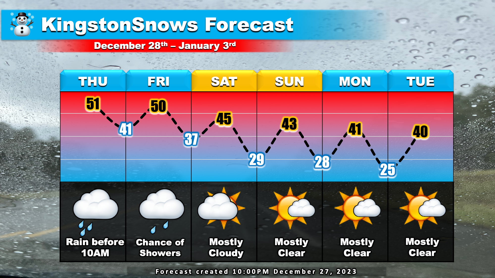
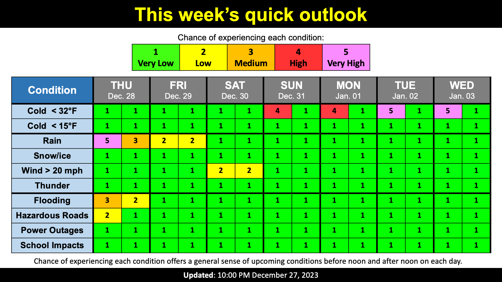

More rain overnight
School Forecast
through Monday January 1st
Last updated: 10:30PM Wednesday December 27, 2023
| 0% (Nope) |
|---|
| 100% (YES!) |
|---|
| 0% (Nope) |
|---|
___________________
10:30PM Update
After a rainy morning, a solid lull in the precipitation developed this afternoon and this evening. However, both radar and ground observations from NYS Mesonet stations in High Falls and Red Hook confirm that steady rain has redeveloped across the area. Rain will continue steadily overnight, persisting into Thursday morning. Rain of potentially moderate intensity will likely amount to just under one inch across the Kingston area before tapering off by about 10AM tomorrow. This rainy period will be the most active part of this week's weather.
Once the steady rain ends tomorrow morning a chance of light rain showers will persist through Friday. Any rain Thursday afternoon or Friday is not expected to amount to much, but overcast skies will keep things dreary. As this storm departs Friday, its trailing cold front will begin to approach the region. This will result in afternoon temperatures falling from near 50 tomorrow and Friday to the mid and low 40s for the weekend. As we head into the brand new year, we'll be greated by mostly clear skies. Temperatures early next week are likely to range from the upper 20s overnight to the low 40s in the afternoons - about 5 to 10 degrees above normal for this time of year.

Fortunately, there have been no reports of flooding in the mid-Hudson Valley associated with this storm. That being said, the ground remains nearly saturated. Soils in most areas across Ulster and Dutchess counties remain more than 95% saturated. This in conjunction with steadier rain moving into the area tonight means that there is still the potential for localized areas of pooling water. Flooding related to pooling water is most likely in areas with poor drainage. The threat will be greatest early Thursday morning due to rain falling overnight.
Next Update:
On Saturday
-Ethan

KingstonSnows | Kingston, New York
Website built by Ethan Burwell